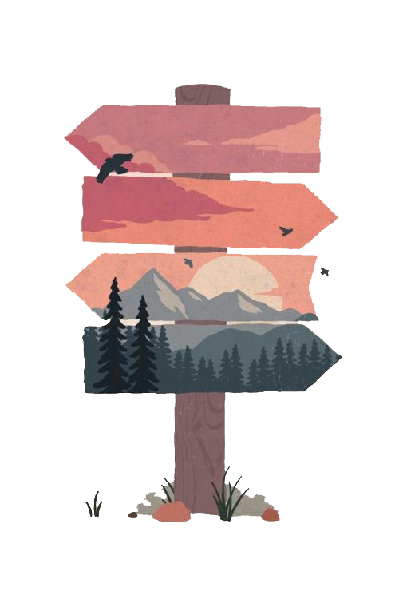

3-D Art
A 3D artist creates three-dimensional models, animations, and visual effects to be used in various creative projects such as films, video games, and digital advertising campaigns. This involves creating special effects to match specific briefs using a combination of hand-drawing techniques and computer software.
Three-dimensional. Artworks that have depth as well as height and width and that exist in space are three-dimensional. ...
Performance. Performance art is art in which the artist engages in some kind of performance, sometimes involving the viewers. ...
Craft and Folk Art. ...
Architecture. ...
Mixed Media.
choose your direction and learn with me
Digital 3D Art

3D-Craft